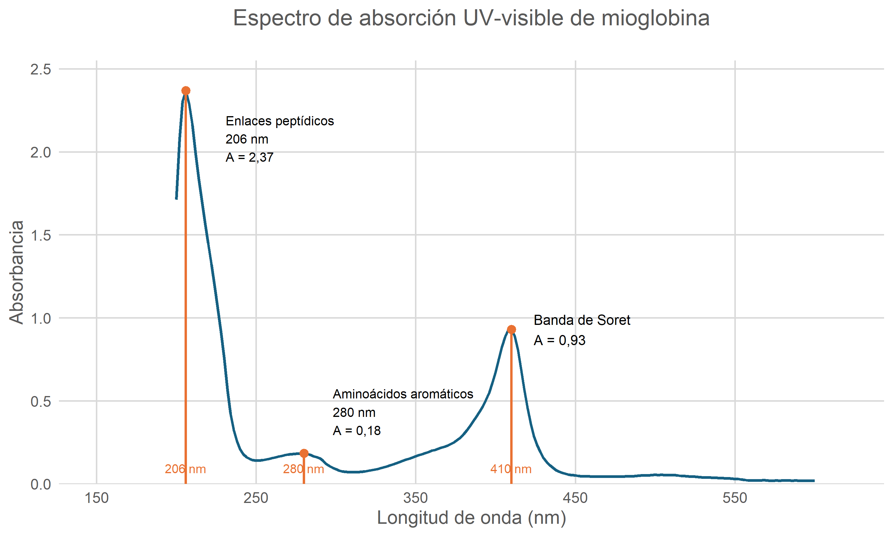
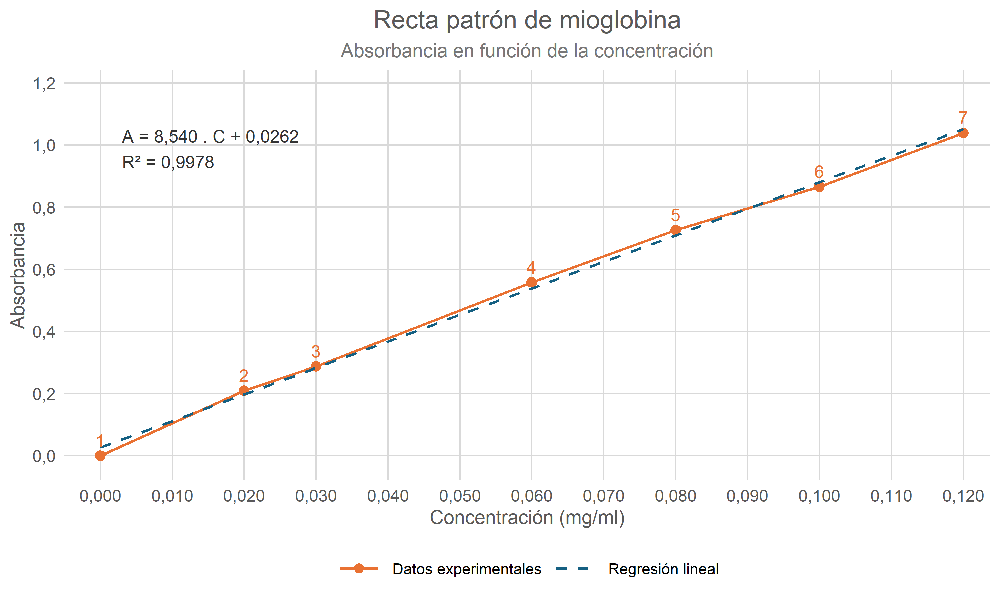
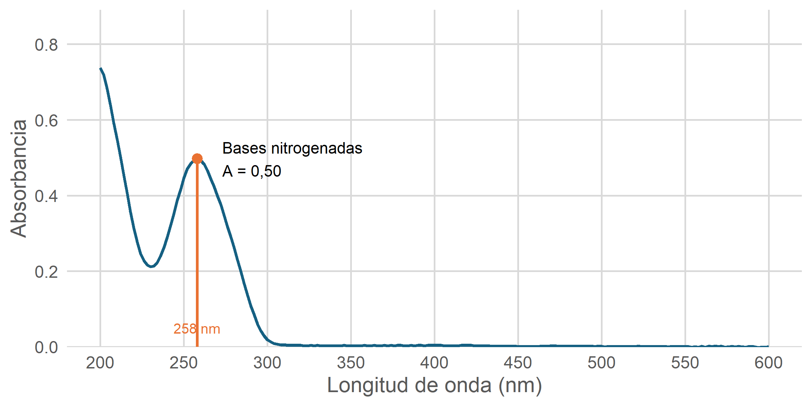
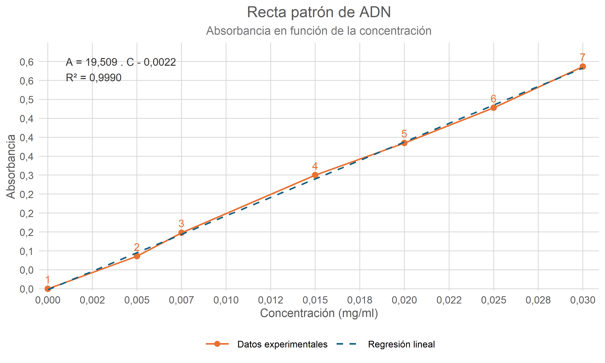

Cuaderno de prácticas de Bioquímica Física y Estructura de Macromoléculas
Práctica 1: Espectrofotometría ultravioleta (UV)-visible de proteínas, nucleótidos y ácidos nucleicos
Muestra 1 - mioglobina
| Tubo | Tampon volumen - Tris-HCl 0,02 M (ml) | Muestra tipo | Muestra volumen (ml) | Muestra concentracion (mg/ml) | Absorbancia medida |
|---|---|---|---|---|---|
| 1 | 1.00 | 1x | 0.00 | 0.00 | 0.000 |
| 2 | 0.90 | 1x | 0.10 | 0.02 | 0.209 |
| 3 | 0.85 | 1x | 0.15 | 0.03 | 0.287 |
| 4 | 0.70 | 1x | 0.30 | 0.06 | 0.558 |
| 5 | 0.60 | 1x | 0.40 | 0.08 | 0.726 |
| 6 | 0.50 | 1x | 0.50 | 0.10 | 0.866 |
| 7 | 0.40 | 1x | 0.60 | 0.12 | 1.039 |
| 8 | 0.00 | 5x | 1.00 | 1.00 | NA |
| 9 | 0.50 | 5x | 0.50 | 0.50 | NA |
| 10 | 0.90 | 5x | 0.10 | 0.10 | 0.765 |

Para determinar experimentalmente el coeficiente de extinción molar de la mioglobina equina, se utilizaron los siete primeros tubos patrón, con concentraciones entre 0 y 0,12 mg/mL, suponiendo un paso óptico de 1 cm y una masa molecular aproximada de 17.000 g/mol. Mediante regresión lineal se obtuvo la ecuación A = 8,53985.c + 0,02624, con un coeficiente de determinación R² = 0,99783, y un coeficiente de extinción molar de 145.178 L.mol⁻¹.cm⁻¹. Al realizar una regresión forzada al origen 0 se obtuvo un coeficiente de 150.300 L.mol⁻¹.cm⁻¹. Finalmente, aplicando directamente la ley de Lambert-Beer al tubo 6 (A = 0,866; c = 0,1 mg/mL), se obtuvo un valor de 147.220 L.mol⁻¹.cm⁻¹. Los tres resultados fueron próximos entre sí y se compararon con el valor bibliográfico de 157.000 L.mol⁻¹.cm⁻¹ para mioglobina equina férrica a 409 nm y pH 7,0 (1), obteniéndose diferencias relativas del −7,53 %, −4,27 % y −6,23 %, respectivamente. Estas diferencias pueden estar relacionadas con la incertidumbre experimental, el procedimiento de ajuste y las condiciones de medida. En conjunto, los resultados presentan una buena concordancia con la referencia seleccionada y son compatibles con la ley de Lambert-Beer en el intervalo estudiado.
Recalculando las absorbancias esperadas mediante la ley de Lambert-Beer y utilizando el coeficiente de extinción molar experimental que presenta la menor desviación respecto al valor bibliográfico (150.300 L.mol⁻¹.cm⁻¹), se obtuvieron los valores que se muestran en la siguiente tabla.
| Tubo | Concentración (mg/mL) | Absorbancia medida | Absorbancia esperada lineal | Absorbancia esperada teorica (usando epsilon = 157000) | Diferencia en % (medida - esperada lineal) |
|---|---|---|---|---|---|
| 1 | 0.00 | 0.000 | 0.0000 | 0.0000 | NA |
| 2 | 0.02 | 0.209 | 0.1768 | 0.1847 | 18.19 |
| 3 | 0.03 | 0.287 | 0.2652 | 0.2771 | 8.20 |
| 4 | 0.06 | 0.558 | 0.5305 | 0.5541 | 5.18 |
| 5 | 0.08 | 0.726 | 0.7073 | 0.7388 | 2.64 |
| 6 | 0.10 | 0.866 | 0.8841 | 0.9235 | -2.04 |
| 7 | 0.12 | 1.039 | 1.0609 | 1.1082 | -2.06 |
| 8 | 1.00 | NA | 8.8412 | 9.2353 | NA |
| 9 | 0.50 | NA | 4.4206 | 4.6176 | NA |
| 10 | 0.10 | 0.765 | 0.8841 | 0.9235 | -13.47 |
Para las muestras preparadas con 1 mL de mioglobina 5× (tubo 8) y con 0,5 mL de mioglobina 5× y 0,5 mL de tampón (tubo 9), el espectrofotómetro indicó valores de absorbancia superiores a 3, fuera de su rango de medida. A estas absorbancias tan elevadas, las mediciones no serían suficientemente fiables para su cuantificación y, por tanto, no fue posible determinar experimentalmente la concentración de estas disoluciones a partir de sus absorbancias. No obstante, utilizando el coeficiente de extinción molar determinado experimentalmente (150.300 L.mol⁻¹.cm⁻¹) y las concentraciones nominales conocidas, se calcularon las absorbancias esperadas de 8,84 y 4,42, respectivamente. Ambos valores superan el rango de medida del instrumento, lo que concuerda con los resultados observados.
En el caso de la muestra preparada con 0,1 mL de mioglobina 5× y 0,9 mL de tampón, la absorbancia esperada debería ser equivalente a la del tubo 6 (A = 0,866), ya que ambas muestras presentan la misma concentración final de mioglobina. Sin embargo, se observó una desviación mayor de -13.47% respecto al valor esperado, posiblemente debida a errores de pipeteo y a la acumulación de errores durante la preparación de las diluciones sucesivas.
Muestra 2 - ADN

| Tubo | Tampon volumen - Tris-HCl 0,02 M (ml) | Muestra tipo | Muestra volumen (ml) | Muestra concentracion (mg/ml) | Absorbancia medida |
|---|---|---|---|---|---|
| 1 | 1.00 | 1x | 0.00 | 0.000 | 0.000 |
| 2 | 0.90 | 1x | 0.10 | 0.005 | 0.086 |
| 3 | 0.85 | 1x | 0.15 | 0.007 | 0.148 |
| 4 | 0.70 | 1x | 0.30 | 0.015 | 0.300 |
| 5 | 0.60 | 1x | 0.40 | 0.020 | 0.385 |
| 6 | 0.50 | 1x | 0.50 | 0.025 | 0.478 |
| 7 | 0.40 | 1x | 0.60 | 0.030 | 0.587 |
| 8 | 0.00 | 5x | 1.00 | 0.250 | NA |
| 9 | 0.50 | 5x | 0.50 | 0.125 | 2.481 |
| 10 | 0.90 | 5x | 0.10 | 0.025 | 0.472 |

Para determinar experimentalmente el coeficiente de extinción molar del ADN, se utilizó como unidad de referencia un par de bases, con una masa molar promedio de 660 g/mol, debido a que la masa molar total de la molécula depende de su longitud. A partir de la pendiente de la recta patrón (19,509 L.g⁻¹.cm⁻¹), se obtuvo un coeficiente de extinción molar aproximado de 12.876 L.mol⁻¹.cm⁻¹ por par de bases. Este resultado se comparó con el valor bibliográfico de 13.200 L.mol⁻¹.cm⁻¹ por par de bases a 260 nm (2), obteniéndose una desviación relativa del −2,46 %. Los resultados muestran una buena concordancia con la referencia y son compatibles con la ley de Lambert-Beer en el intervalo estudiado.
Recalculando las absorbancias esperadas mediante la ley de Lambert-Beer y utilizando el coeficiente de extinción molar experimental, se obtuvieron los valores que se muestran en la siguiente tabla.
| Tubo | Concentración (mg/mL) | Absorbancia medida | Absorbancia esperada lineal | Diferencia en % (medida - esperada lineal) |
|---|---|---|---|---|
| 1 | 0.0000 | 0.000 | 0.0000 | NA |
| 2 | 0.0050 | 0.086 | 0.0975 | -11.83 |
| 3 | 0.0075 | 0.148 | 0.1463 | 1.14 |
| 4 | 0.0150 | 0.300 | 0.2926 | 2.51 |
| 5 | 0.0200 | 0.385 | 0.3902 | -1.32 |
| 6 | 0.0250 | 0.478 | 0.4877 | -1.99 |
| 7 | 0.0300 | 0.587 | 0.5853 | 0.29 |
| 8 | 0.2500 | NA | 4.8773 | NA |
| 9 | 0.1250 | 2.481 | 2.4386 | 1.73 |
| 10 | 0.0250 | 0.472 | 0.4877 | -3.22 |
Para la muestra preparada con 1 mL de ADN 5× (tubo 8), el espectrofotómetro indicó una absorbancia fuera de su rango de medida. A absorbancias tan elevadas, las mediciones tampoco serían suficientemente fiables para su cuantificación y, por tanto, no fue posible determinar experimentalmente la concentración de esta disolución a partir de su absorbancia. No obstante, utilizando el coeficiente de extinción molar determinado experimentalmente (12.876 L.mol⁻¹.cm⁻¹ por par de bases) y la concentración nominal conocida de 0,25 mg/mL, se calculó una absorbancia esperada de 4,88. Este valor supera el rango de medida del instrumento, lo que concuerda con el resultado observado.
Para las muestras de ADN 5× diluidas con 0,5 mL de tampón (tubo 9) y 0,9 mL de tampón (tubo 10), se calcularon absorbancias esperadas de 2,44 y 0,488, respectivamente. Las absorbancias medidas fueron de 2,481 y 0,472, mostrando una buena concordancia con los valores calculados. Además, el tubo 10 presentó una absorbancia muy próxima a la del tubo 6 (0,478), con el que comparte la misma concentración final de ADN (0,025 mg/mL). Las pequeñas desviaciones observadas podrían deberse a errores experimentales durante la preparación de las diluciones y las mediciones.
Practica 2: pH
1.
De Sanctis G, Petrella G, Ciaccio C, Feis A, Smulevich G, Coletta M. A Comparative Study on Axial Coordination and Ligand Binding in Ferric Mini Myoglobin and Horse Heart Myoglobin. Biophysical Journal. 2007;93(6):2135-42.
2.
Seručnik M, Podlipnik Č, Hribar-Lee B. DNA–Polyelectrolyte Complexation Study: The Effect of Polyion Charge Density and Chemical Nature of the Counterions. The Journal of Physical Chemistry B. 2018;122(21):5381-8.